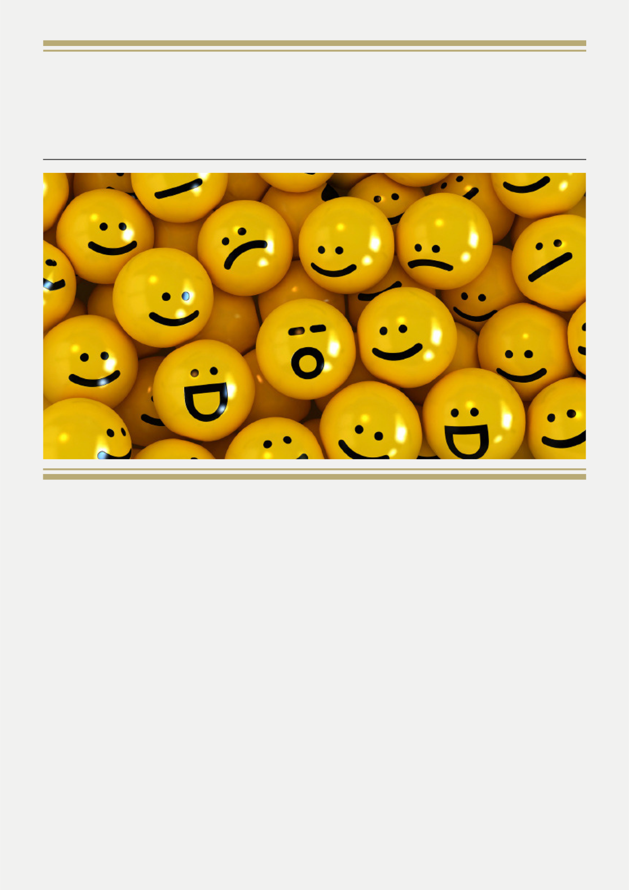
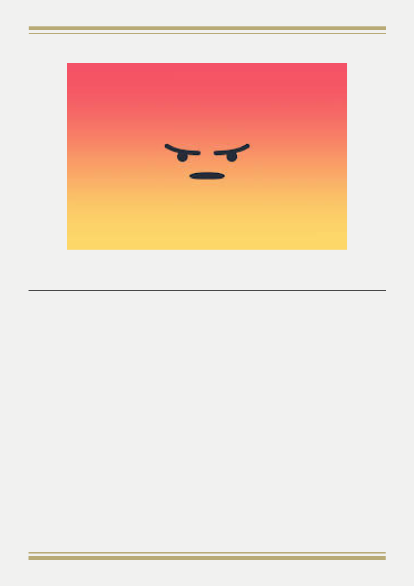
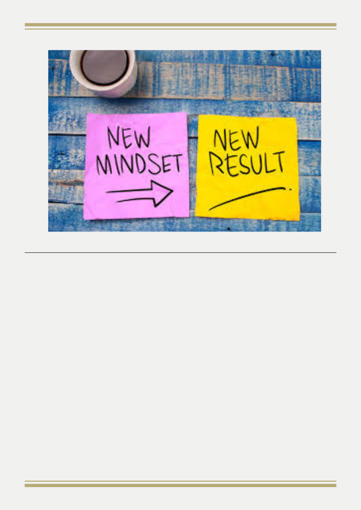

青 少 年 的 情 绪 管 理
见
证
：
A
u
d
r
e
y
领
会
：
可
可
敬
拜
：
全
全
诗
歌
：
O
n
e
w
a
y
服
侍
同
工

听到父母唠叨，批评、羞辱，和别人比较，被说教，
爸
妈
未
审
先
判
。
常常，我们的反应是生气，爆炸。
人都是选择生气，因为情绪是可以管理，可以控制的
环
境
会
影
响
成
绩
最容易激怒青少年的五件事
当顺著圣灵，就不放纵肉体。 （加5:16）
我们要控制怒气，而不是像动物一样直接反应
我什么时候软弱，什么时候刚强。(林后12:10)
改变要从思想开始，要有积极的想法，看事情时往好
的
地
方
想
在以色列人进迦南时，只有约书亚和迦勒有着乐观的
眼光，他们相信神会带领他们到迦南。
1.思想，从消极改变为积极
2.情绪，从负面改变成正面
3.视观，从悲观改变成乐观

遮掩自己罪过的，必不亨通，承认离弃罪过的，必蒙怜恤。（箴28:13）
就
是
在
患
难
中
，
也
是
欢
欢
喜
喜
的
。
（
罗
5
:
3
）
你要拣选生命，爱耶和华你的神，使你的日子长久。 （申30:19,24）
要
懂
得
尊
重
每
个
人
，
好
好
做
选
择
4
.
不
要
找
借
口
只
要
找
答
案
5
.
不
要
让
环
境
控
制
心
境
，
只
要
用
心
境
创
造
环
境
6
.
人
生
是
选
择
的
结
果
记录：爱宝
经
文
图
片
：
C
h
r
i
s
t
y
排
班
：
S
t
e
v
e
n